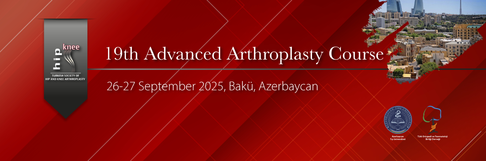

Dear Colleagues,
As the Hip and Knee Arthroplasty Association, with the contributions of the Department of Orthopedics and Traumatology of Azerbaijan Medical University, we will hold the 19th Advanced Arthroplasty Course in Baku, Azerbaijan on September 26–27, 2025. In this course—designed especially for colleagues who wish to enhance their knowledge and skills in hip and knee arthroplasty—we aim to update knowledge and skills not only through theoretical sessions but also via practical applications on dry bones. With experienced instructors in arthroplasty, both round-table sessions and case-based presentations will provide opportunities for practical and theoretical discussions. In our two-day course, we will be delighted to welcome you—together with our Azerbaijani and Turkish colleagues—with an updated, interactive program. The course will be held at Akşehir Marriot Hotel Boulevard, one of the most beautiful spots in Baku.
With our kind regards, we look forward to meeting you at the 19th Advanced Arthroplasty Course.
Prof. Dr. İbrahim Tuncay
Hip and Knee Arthroplasty Association
President of the Board
Prof. Dr. Eldar Abbasov
Course Co-Chair
President, Hip and Knee Arthroplasty Association

